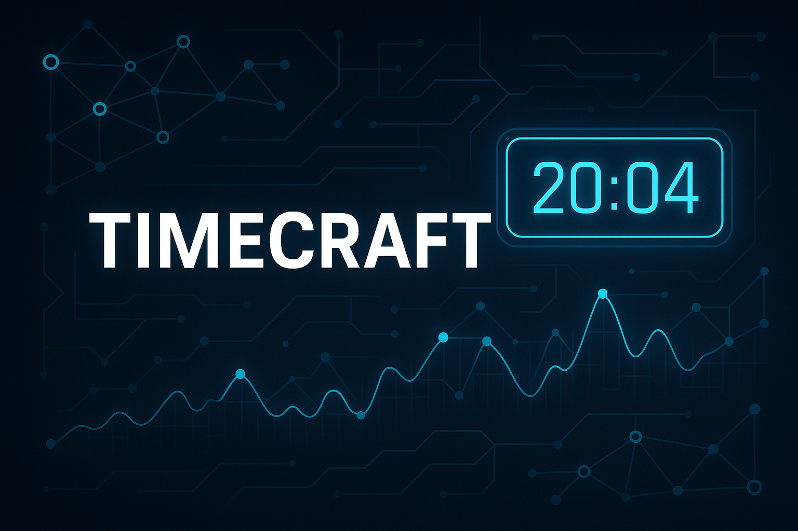

¶
An advanced solution for time series analysis, database integration, and task automation, with dynamic notifications and a powerful CLI.
Table of Contents¶
- About the Project
- Features
- Installation
- Usage
- Scheduled Execution
- Webhook Notifications
- Roadmap
- Contributing
- Contact
About the Project¶
TimeCraft is a flexible and powerful solution for time series analysis, database integration, and task automation. Developed in Python, it offers webhook notification support, scheduled model execution, and an intuitive CLI to streamline data workflows.
Why TimeCraft?
- üìà Advanced Analysis: Robust scripts for modeling, forecasting, and evaluating temporal data.
- üõ¢Ô∏è Simple Integration: Tools to connect and query multiple database systems.
- ⚙️ Automation & Notifications: Modules to automate data workflows and send alerts.
Features¶
✨ Plug-and-Play Models:
- ARIMA, Prophet, LSTM, and other ready-to-use models.
- Easy customization and extension.
üîó Database Integration:
- Efficient connection to different database systems.
- Scripts for data import and querying.
⏰ Scheduled Execution:
- Schedule automatic model runs (cronjob-like).
- CLI and Python API for scheduling.
üîî Dynamic Notifications:
- Send notifications via Webhook (Slack, Discord, custom APIs).
- Customizable payloads for each platform.
üíª Powerful CLI:
- Simple commands to run models, schedule executions, and monitor tasks.
- Extensible for new workflows.
Installation¶
üì¶ Quick Installation (Recommended)¶
# Install TimeCraft with core features
pip install timecraft
# Or install with all features (AI, Web Server)
pip install timecraft[all]
üîß Development Installation¶
# Clone the repository
git clone https://github.com/rafa-mori/timecraft.git
cd timecraft
# Quick setup with development script
./dev.sh setup
# Or manual setup
python3 -m venv venv
source venv/bin/activate # On Windows: venv\Scripts\activate
pip install -e .
üéØ Optional Features¶
# AI features (voice, chatbot, audio processing)
pip install timecraft[ai]
# Web server and API features
pip install timecraft[web]
# Database connectors (PostgreSQL, MySQL, etc.)
pip install timecraft[db]
# Development tools
pip install timecraft[dev]
Usage¶
üêç Python Usage (Recommended)¶
import timecraft
# Check available features
print(f"AI available: {timecraft.AI_AVAILABLE}")
print(f"Version: {timecraft.__version__}")
# Create and use TimeCraft model
model = timecraft.TimeCraftAI()
data = model.load_data("data/hist_cambio.csv")
forecasts = model.forecast(data, periods=30)
# If AI features are available
if timecraft.AI_AVAILABLE:
chatbot = timecraft.ChatbotActions()
response = chatbot.process_query("Analyze my data")
üñ•Ô∏è CLI Usage¶
# Run quick test
python examples/quick_test.py
# Run demo
python examples/demo_basic.py
# Development mode
./dev.sh test
üìä Advanced Examples¶
import timecraft
# Database connection
db = timecraft.DatabaseConnector()
data = db.query("SELECT * FROM timeseries_data")
# Machine learning models
lr = timecraft.LinearRegression()
lr.fit(X_train, y_train)
# Forecasting with Prophet (if available)
model = timecraft.TimeCraftAI()
forecasts = model.forecast_prophet(data)
Command and Flag Descriptions¶
--data: Path to the data file.--date_column: Name of the date column.--value_columns: Value columns to analyze.--is_csv: Indicates if the file is CSV.--model: Model type (timecraft,classifier,regression).
Configuration¶
TimeCraft can be configured via command-line arguments or directly in Python code. For advanced configurations, see the examples in the /tutorials folder.
Scheduled Execution¶
TimeCraft allows you to schedule automatic model runs, similar to a cronjob.
Via CLI:
python -m timecraft_ai schedule <interval_seconds> <model>
<interval_seconds>: interval between executions (e.g., 600 for 10 minutes)<model>: model type (timecraft,classifier,regression)
Via Python:
from timecraft_ai import run_scheduled
run_scheduled(model.run, interval_seconds=600)
The scheduler runs in the background and can be stopped with Ctrl+C.
Webhook Notifications¶
TimeCraft supports sending notifications to webhooks after model runs or analyses. Ideal for automation, monitoring, or integration with other systems (Slack, Discord, custom APIs).
How it works¶
- Pass the
webhook_urlparameter to therunorrun_analysismethods. - When finished, a POST with a JSON payload is sent to the URL.
- Extra fields can be added via
webhook_payload_extra.
Example:
model.run(webhook_url="https://your-webhook.com/webhook")
With extra payload:
model.run(
webhook_url="https://your-webhook.com/webhook",
webhook_payload_extra={"user": "rafa", "run_type": "nightly"}
)
Slack:
model.run(
webhook_url="https://hooks.slack.com/services/XXX/YYY/ZZZ",
webhook_payload_extra={"text": "TimeCraft finished!"}
)
Discord:
model.run(
webhook_url="https://discord.com/api/webhooks/XXX/YYY",
webhook_payload_extra={"content": "TimeCraft finished!"}
)
The payload can be customized for each platform using
webhook_payload_extra.
Roadmap¶
üîú Upcoming Features:
- Support for cloud data sources (BigQuery, Snowflake)
- Email notification system
- Dashboard for result visualization
Contributing¶
Contributions are welcome! See the Contributing Guide for details.
Contact¶
üíå Developer:
Rafael Mori
üíº faelmori/timecraft on GitHub
LinkedIn: Rafa Mori